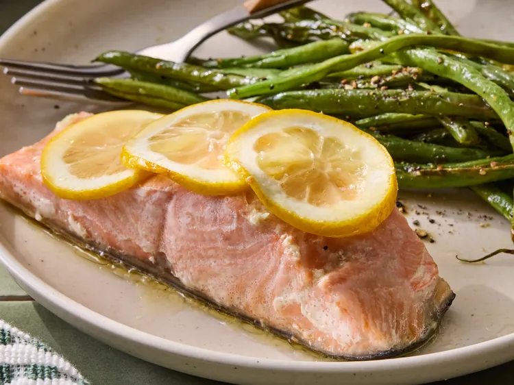

Home
Sheet Pan Lemon Garlic Salmon with Green Beans

Description
For this sheet pan lemon garlic salmon and green beans, the salmon cooks in a foil packet while the green beans roast right alongside it on the sheet pan.
It's an easy, flavorful dinner with minimal cleanup—serve with steamed rice if you like.
Ingredients
- 1 (4 ounce) salmon filet
- 2 teaspoons olive oil
- 1 garlic clove
- salt and freshly ground black pepper to taste
- 3 thin slices lemon
- 3 ounces French-style green beans
- 2 teaspoon pecan oil or olive oil
- 1/2 teaspoon salt
- 1/4 teaspoon freshly ground black pepper
Steps
- Heat oven to 425 degrees F (220 degrees C). Line a small baking tray with foil.
- Place salmon on a piece of foil, drizzle with olive oil. Peel the garlic, and grate with a microplane grater to form a paste. Rub salmon with garlic paste; sprinkle with salt and pepper. Top the fillet with three thin overlapping lemon slices.
- Bring edges of foil up to the middle and fold down, fold top and bottom together to create a packet. Leave a little air space in the packet. Place packet on one half of baking tray.
- Toss the green beans with pecan oil, salt, and pepper. Spread them on the other half of the baking tray.
- Bake in the preheated oven until beans are tender and salmon flakes easily with a fork, about 17 minutes. Toss green beans halfway through cooking time.